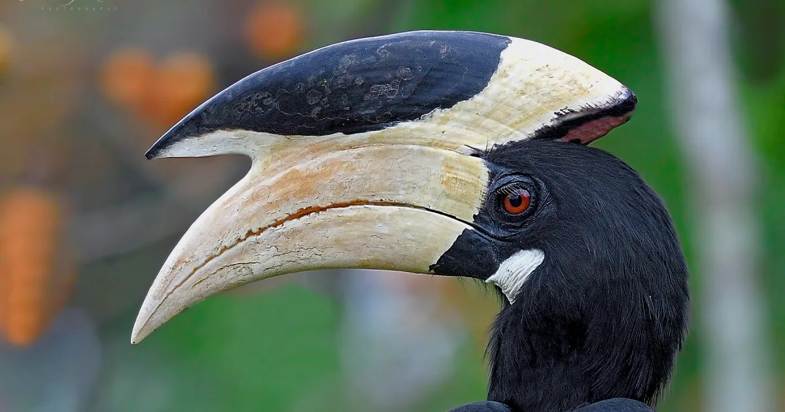
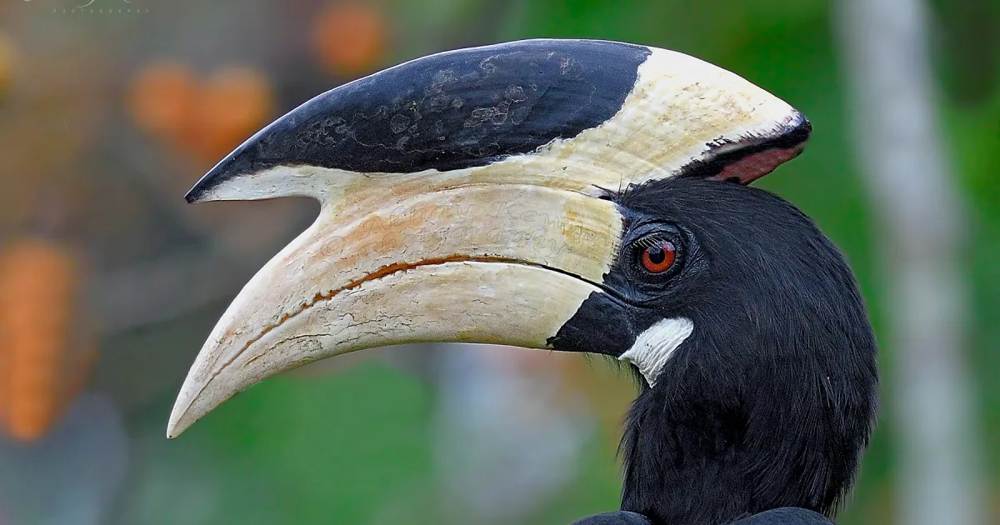
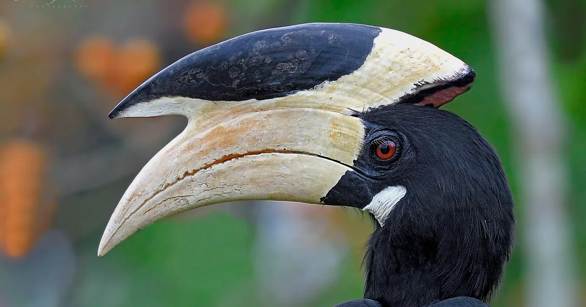

Jaikwadi - 202203103510084
SCROLL DOWN TO
VIEW DETAILS
VIEW DETAILS
Jaikwadi Wildlife Sanctuaryin the Aurangabad and Ahmednagar districts of Maharashra is one of the most fascinating bird sanctuaries.

Paithan
Jayakwadi Bird Sanctuary in the Aurangabad and Ahmednagar districts of Maharashra is one of the most fascinating bird sanctuaries. Sprawls across the backwaters of Nathsagar reservoir, it houses variety of flora and fauna. A wide range of resident and more than 70 species of migratory birds and resident birds can found in the vicinity. Jaikwadi was notified as a sanctuary in 1986.
Located in the Paithan village, it’s biodiversity owes much to the Jaikwadi dam alias Paithan dam which was constructed over the sacred river Godavari in 1973. It is the major source of water supply to the Aurangabad city. With the10 kms long dam barrier, it boasts to be the largest earthen dam in Maharashtra. It is a shallow saucer type water body with nearly 450-km long shoreline. Jayakwadi dam offers scenic and panoramic view of Paithan and is a magnificient treat for the bird watchers.
Jayakwadi Bird Sanctuary is home to numerous species of birds. The sanctuary is a bird lover's paradise that attracts numerous resident and migrant birds.
The proximity of Nathsagar Lake to the bird sanctuary adds to the aquatic flora and fauna of the sanctuary. The aquatic vegetation includes species of Spyrogyra, Hydrilla, Chara, Potamogeton, and Vallisneria, etc. More than 50 species of fish are found in the Nathsagar Lake around the sanctuary.
The sanctuary is spread over in 30 islands of various sizes in the shallow waters, with trees for roosting; this provides an ideal shelter for migratory birds. Jayakwadi Dam, one of the largest earthen dams in Asia, is located around 52 KM away from Aurangabad in Maharashtra.
The average rainfall here is 500 mm every year during June-September. During Summer temperature reaches up to 45 degrees Celsius, while during winter the minimum temperature is 9 degrees Celsius.
Inside the sanctuary there is a large garden known as Sant Gyaneshwar Udyan . Spread over 124 hectares, it is the largest garden in Maharashtra. Similar to the famous Brindavan Gardens near Bengalaru, it has colourful flowerbeds, hundred thousand trees, forty thousand fruit trees, vast lawns and musical fountains. Besides these attractions, the park provides a children’s play area, swimming pool and boat rides which all make this spot ideal for a weekend picnic.